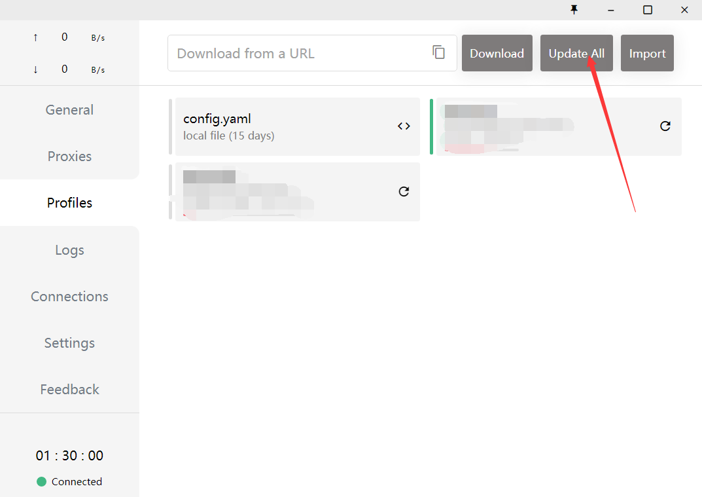

若打不开梯子网站试试切换浏览器或网络
挑选节点（注意香港不能上 ChatGPT）：
关掉梯子（如图关闭系统代理[System Proxy]，图二是关闭clash）：
节点显示超时[timeout](尝试以下两种方法，还是没用就进网站重新导入订阅)

在未关闭VPN的情况下，电脑直接关机会出bug（代理未关闭）。需要重启clash关掉代理；或者在设置里手动关代理（图二）
这里只用了Windows端clash为例，其他基本类似
附：v2rayN界面切换节点